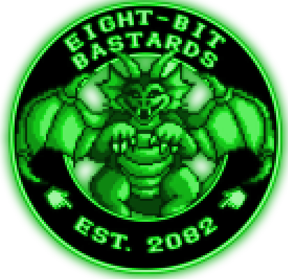

Welcome to my website. If you're here, you're probably familiar with some of the stuff I've written. I cut my teeth writing Steam Whistle Alley, before moving on to Eight Bit Bastards and the sequels. More is coming in 2021, including Stardude, Gargoyle's Gambit, and who knows what else? Join the mailing list, drop me a line, and settle in for a grand adventure. To the north, you see a blog post.
> go north